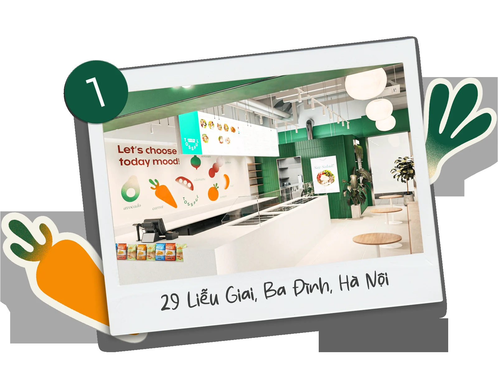
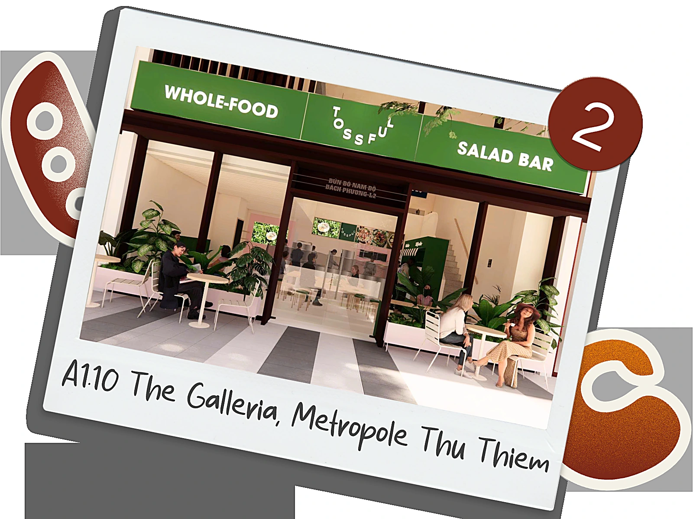
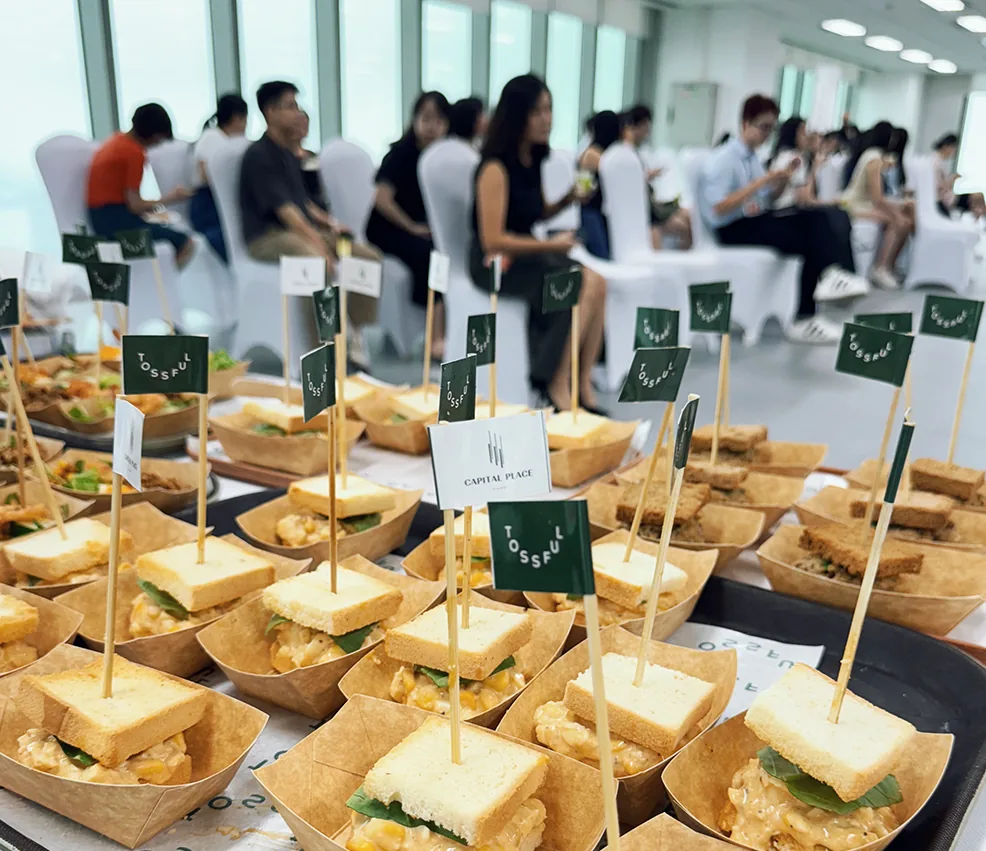
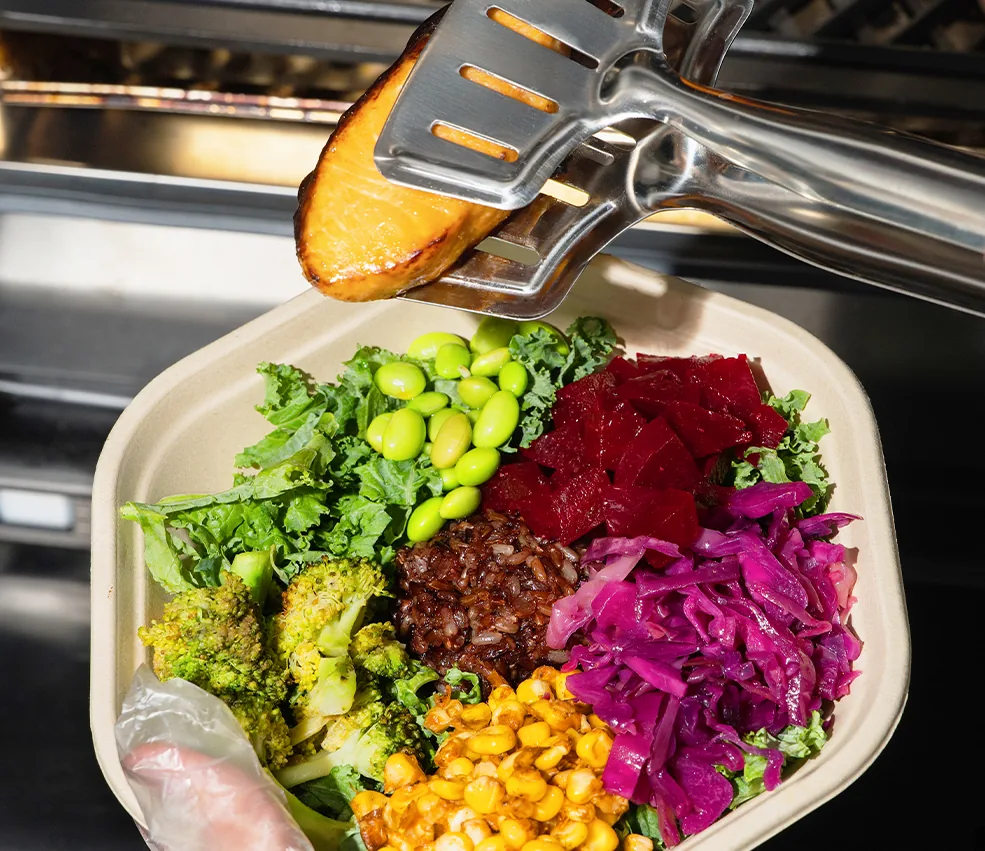
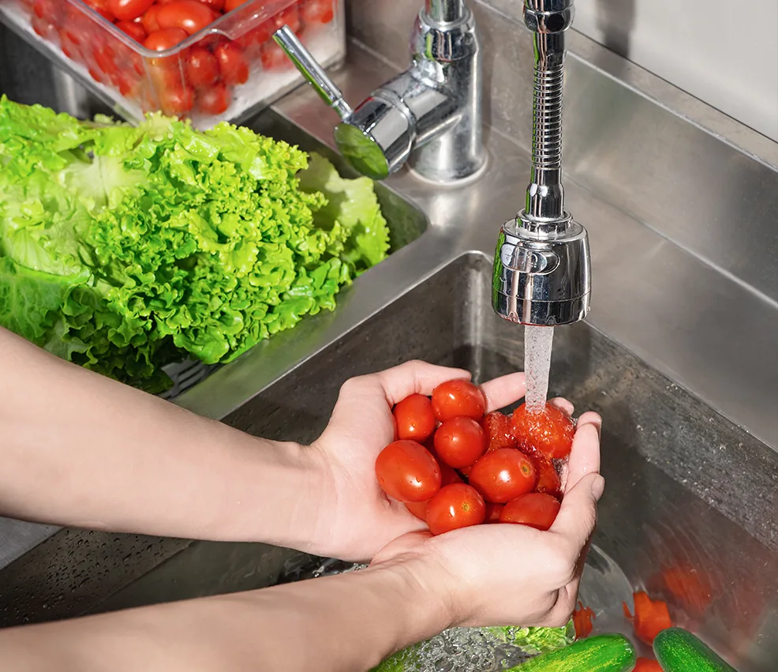
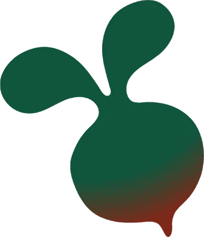
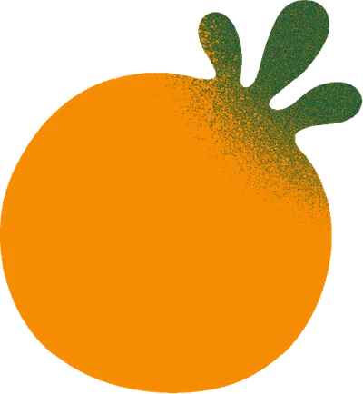
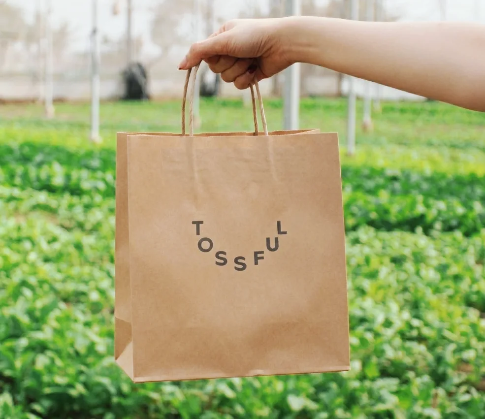

Về TossfulAbout Tossful
Chúng tôi muốn tái định nghĩa "đồ ăn nhanh lành mạnh" We want to redefine "healthy fast food"
Cửa hàng đầu tiên tại
Capital Place - Hà Nội
Our first store —
Capital Place, Hà Nội

Cửa hàng thứ hai tại
Metropole Thủ Thiêm - TP. Hồ Chí Minh
Our second store —
Metropole Thủ Thiêm, HCMC

KẾT HỢP giải pháp bữa ăn lành mạnh cho doanh nghiệp, event, webinar,... CATERING healthy meal solutions for offices, events, webinars…

Tossful ra đời với sứ mệnh LÀM MỚI khái niệm "đồ ăn nhanh lành mạnh" Tossful was born to REFRESH the idea of "healthy fast food"
Nhanh nhưng sạch, tươi và cân bằng dinh dưỡng. Một bữa ăn giúp bạn theo kịp deadlines mà không phải đánh đổi sức khỏe. Fast but clean, fresh and balanced — a meal that keeps up with your deadlines without trading away your health.

Tossful KẾT HỢP những nguyên liệu địa phương tốt nhất Tossful COMBINES the best local ingredients
với một chút sáng tạo và một muỗng đầy đủ đam mê để tạo ra những bát salad thú vị và đáng thử. with a dash of creativity and a full spoon of passion — salads worth getting excited about.


Tossful đang trên hành trình
XÂY DỰNG một cộng đồng lành mạnh
Tossful is on a journey to
BUILD a healthy community
của những người yêu salad, những người ôm trọn cuộc sống với những nụ cười. of salad lovers — people who embrace life with a smile.

Quá trình gặt, hái, vận chuyển, chế biến của Tossful không quá 24h Harvested, transported and prepped — never more than 24 hours
đảm bảo trong bát salad của bạn vẫn còn tươi mát, ngon lành khi đến tay bạn! so every bowl reaches you fresh, crisp and full of flavor!
